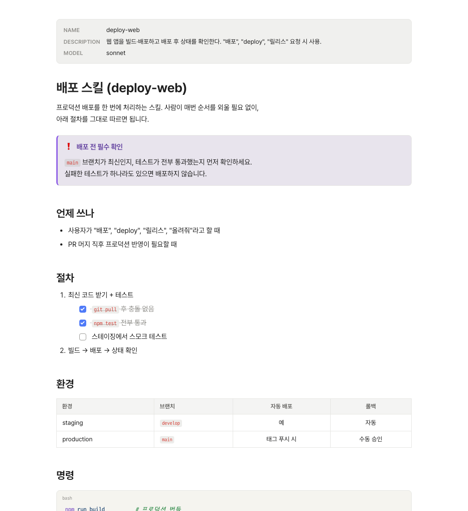
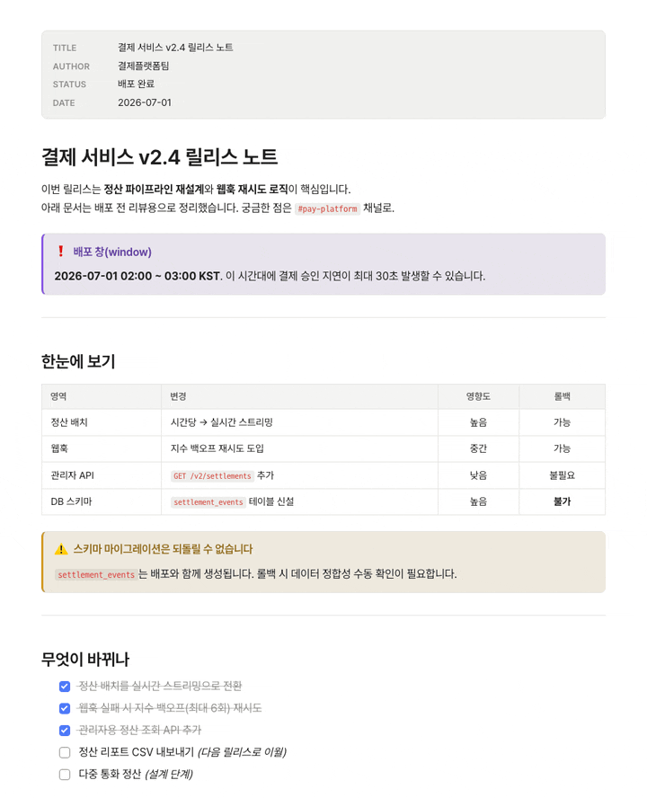
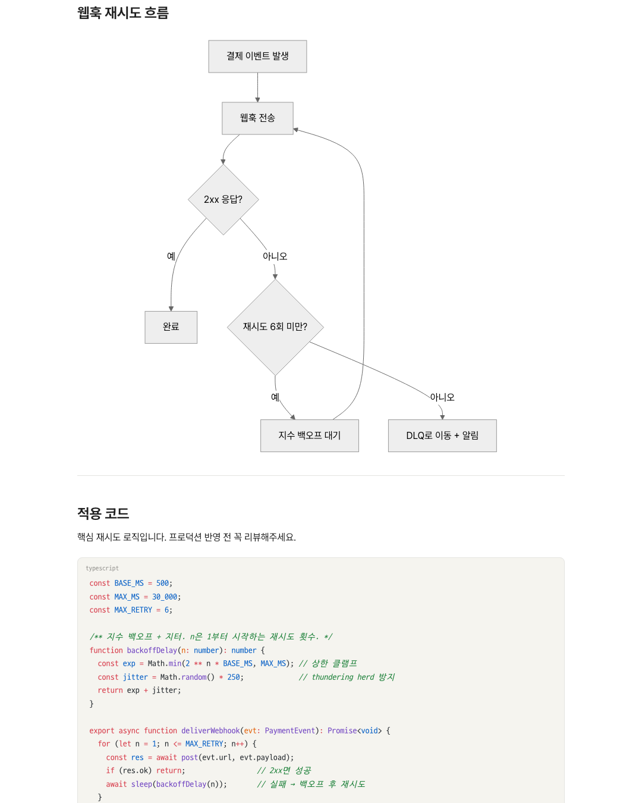

.claude/skills/deploy-web/SKILL.md
CLAUDE.md, SKILL.md, AGENT.md, 커맨드… AI한테 지침 주는 문서들, 흩어놓지 말고 한 곳에서 바로 열어 확인해요.

> AI 지침, 어디 뒀더라
.claude 폴더 깊숙이 CLAUDE.md, 스킬, 에이전트, 커맨드… 정작 볼 땐 트리를 파고들어 하나씩 찾아야 하죠. 그게 은근 번거로워요.
my-project/ └─ .claude/ ├─ CLAUDE.md ├─ skills/ │ ├─ deploy-web/SKILL.md │ └─ code-review/SKILL.md ├─ agents/ │ └─ code-reviewer.md └─ commands/ ├─ ship.md └─ commit.md
## .claude 사이드바
프로젝트를 열면 .claude 안의 스킬·에이전트·커맨드를 종류별로 정리해서 사이드바에 딱 띄워줘요. 트리를 헤맬 일이 없어요.
## 빠른 열기
⌘/Ctrl+O 누르고 몇 글자만 치면 끝이에요. 파일명은 물론 폴더명으로도 찾아주니까, 이름이 다 똑같은 SKILL.md도 헷갈리지 않아요.

## 자동 새로고침
에이전트가 CLAUDE.md나 SKILL.md를 고치면 화면이 알아서 다시 그려져요. 새로고침 버튼 누를 일이 없어요.

## 제대로 된 렌더링
표로 정리한 규칙, 코드 블록, 순서도까지 그대로 그려냅니다. 원문 기호에 눈이 피곤할 일이 없어요.
> 왜 MD좋아인가
메인 타깃이 Windows예요. 파일 연결부터 경로, 인코딩까지 Windows에서 직접 확인해요. macOS도 같은 코드로 같이 굴러가고요.
메뉴도 설정도 번역도 전부 한국어가 먼저예요. 한국어로 일하는 팀 생각하면서 만들었고요.
인터넷 없이 내 컴퓨터 안에서 다 돌아가요. 딱 하나, 번역만 직접 누를 때 통신하고요. 회사 문서를 다뤄도 걱정 없어요.
$ 가격
? 자주 묻는 질문
열 수야 있죠. 근데 .claude 안에 스킬·에이전트·커맨드가 쌓이면 트리가 금방 복잡해져요. MD좋아는 그것들을 종류별로 모아 보여주고, 이름만 치면 바로 열어줍니다.
네, Windows가 메인이에요. macOS도 같은 코드로 똑같이 돼요.
그럼요. 어떤 .md 문서든 열려요. 표·코드·다이어그램·수식까지 전부 렌더링합니다.
최신 버전 설치 파일(Windows·macOS) 다운로드 링크요. 앞으로 나올 업데이트도 그대로 포함이에요.
그럴듯한 후기나 가입자 숫자 같은 건 없습니다. 사내에서 매일 쓰는 사람이 진짜로 한 명 있다는 것, 그거 하나는 사실이에요. 써보고 마음에 들면, 그걸로 됐습니다.